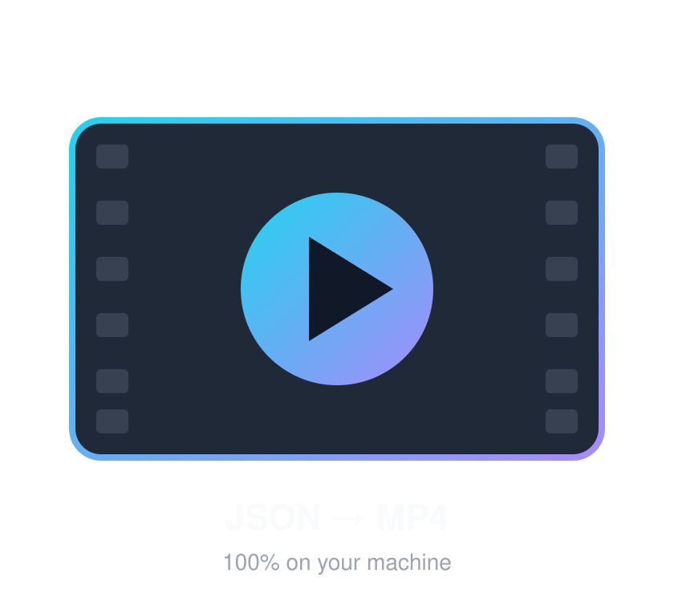
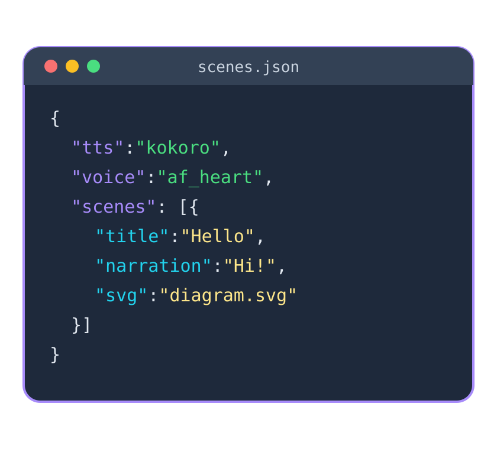
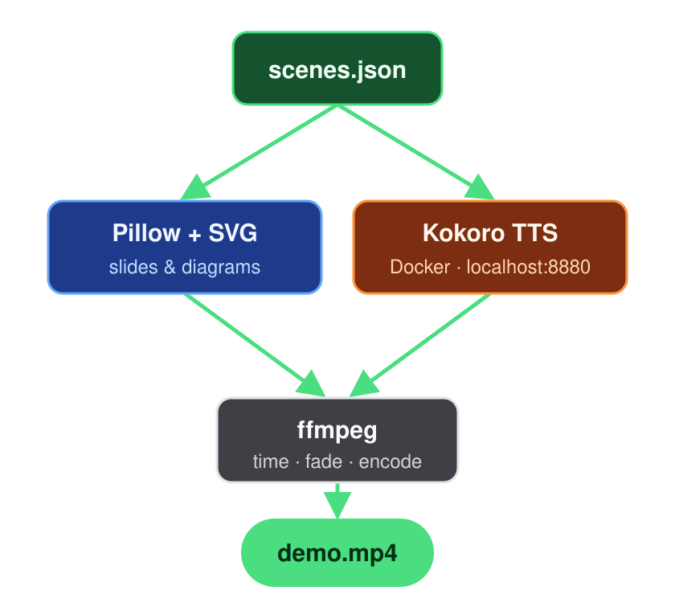
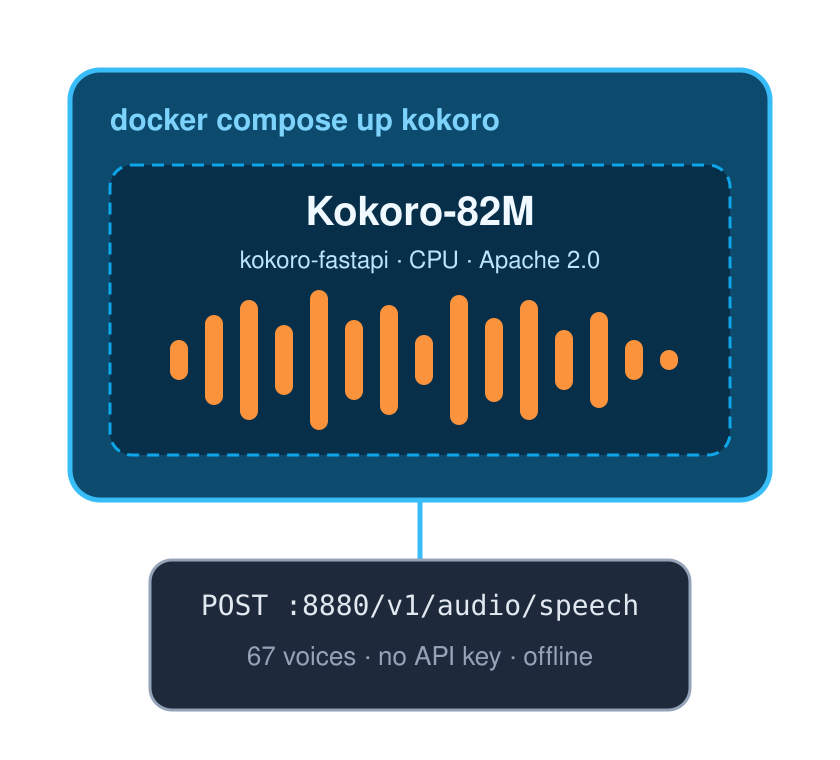
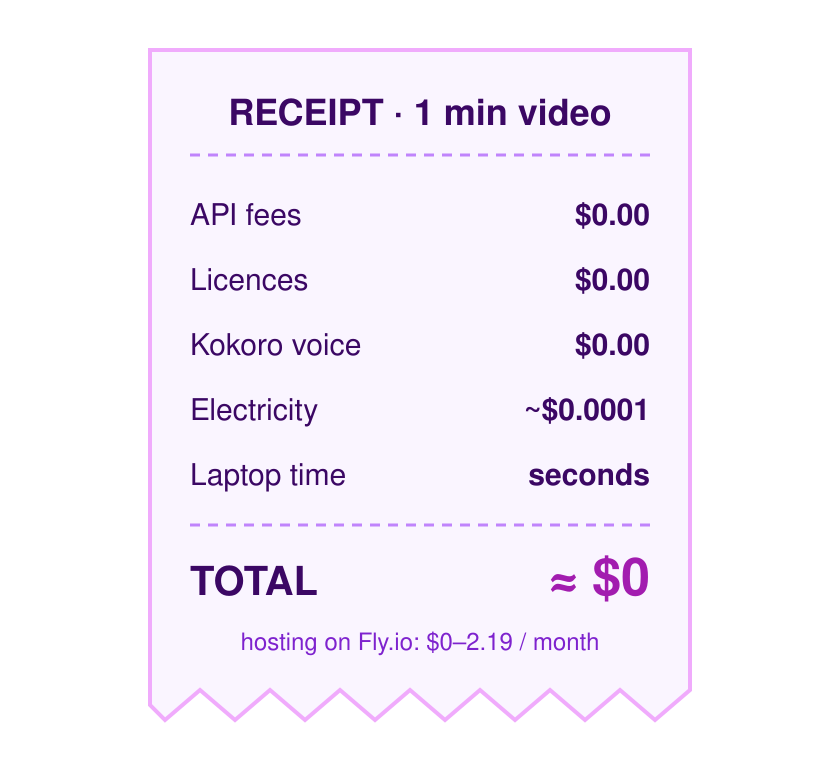
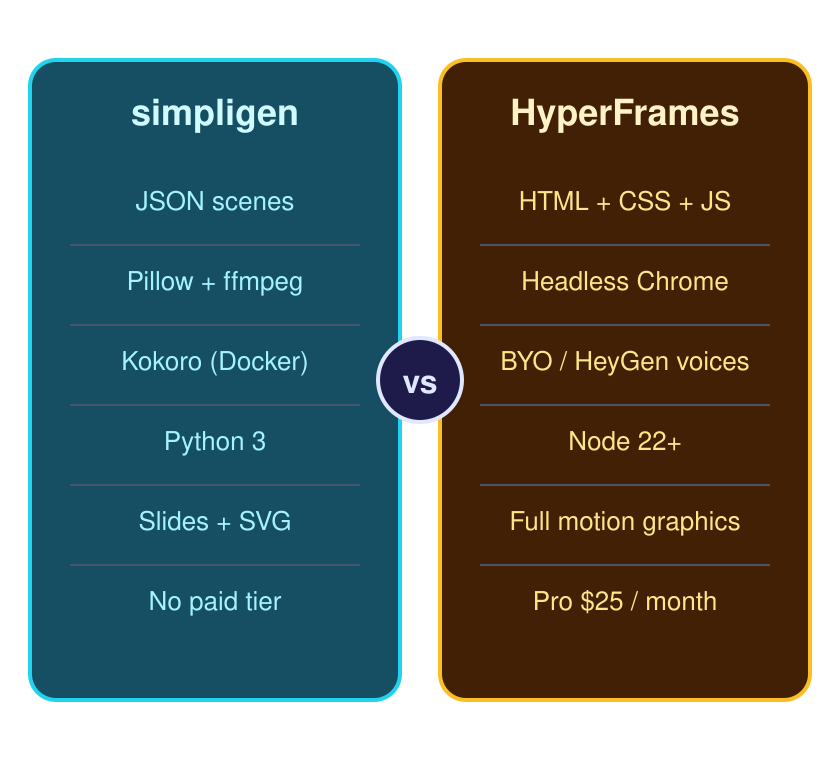
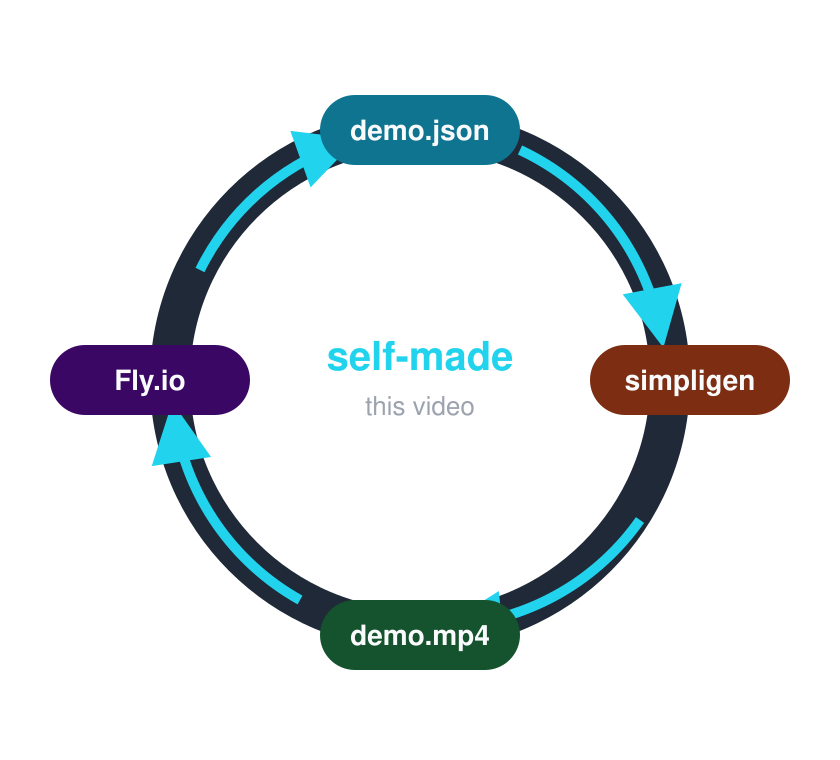
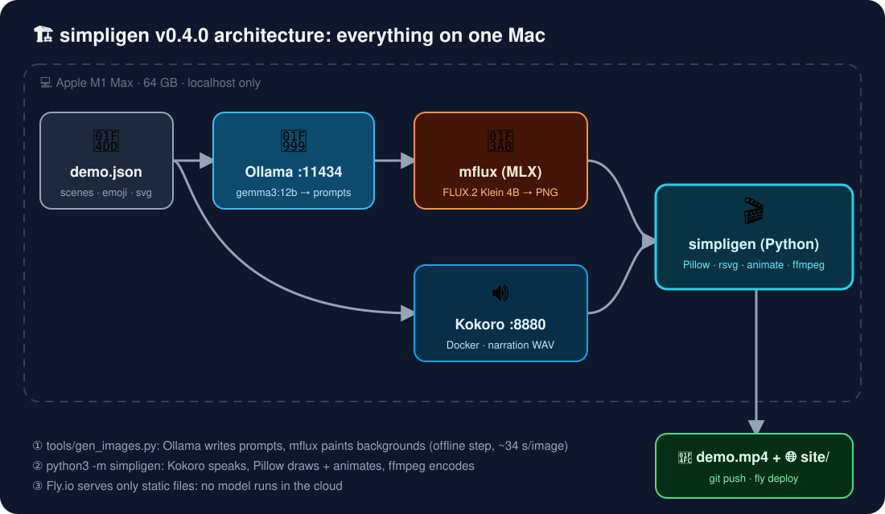
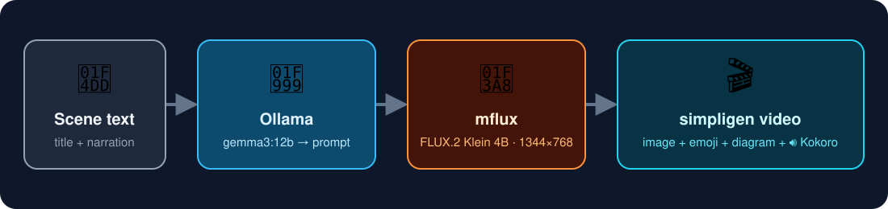

🎬 simpligen VideoStudio
Local video generation proof of concept. You write a JSON script with SVG diagrams and get a narrated 1080p MP4, rendered on your laptop with zero API cost.
🔊 Who generated the audio and images?
The narration was generated locally by Kokoro-82M (open-weight TTS model by hexgrad, Apache 2.0). Voice: af_heart.
It runs in Docker via remsky/kokoro-fastapi-cpu on localhost:8880. No cloud TTS service and no API key were used. The slides, diagrams and video were rendered by simpligen v0.4.0 with Pillow, rsvg and ffmpeg. The opening title animation is drawn frame by frame in Python.
🎨 Background images: generated locally by FLUX.2 Klein 4B (Black Forest Labs, Apache 2.0) via mflux, from prompts written by gemma3:12b in Ollama. See all 8 with their prompts →
🗺️ Scene diagrams







🏗️ Architecture

How Ollama, mflux, Kokoro and simpligen fit together → including what each tool does, measured timings, and where HyperFrames would fit.🎨 AI images in this video

Gallery: 8 locally generated backgrounds, with the prompts → Ollama writes each prompt from the scene, and FLUX.2 Klein 4B paints it in about 34 s on this Mac.🖼️ Local image generation setup
 Which image model to run on this Mac, and what to load → LM Studio writes the prompt, mflux with FLUX.2 Klein 4B draws it, simpligen puts it in the video.
Which image model to run on this Mac, and what to load → LM Studio writes the prompt, mflux with FLUX.2 Klein 4B draws it, simpligen puts it in the video.
⚙️ How it works
$ docker compose up -d kokoro # local TTS on :8880
$ python3 -m simpligen examples/demo.json site/demo.mp4
{
"tts": "kokoro", "voice": "af_heart",
"scenes": [
{ "title": "Hello", "narration": "Hi there.", "svg": "svg/diagram.svg" }
]
}
# Pillow + rsvg draw slides → Kokoro speaks → ffmpeg times, fades, encodes
# Kokoro down? falls back to macOS say / espeak-ng automatically
💰 What it costs
| Item | Cost |
|---|---|
| Software, licences, voice model | $0: Python, Pillow, ffmpeg, librsvg, Kokoro (Apache 2.0) |
| API / per-render fees | $0, all on localhost |
| Compute | ~30 s of laptop time per minute of video (Kokoro warm) |
| Kokoro container | ~2.1 GB RAM while running, 5.6 GB image on disk |
| Electricity | ~$0.0001 per minute of video |
| 1,000 one-minute videos / month | ~8–9 h laptop time, ~$0.10 electricity |
| Hosting this page on Fly.io | $0–$2.19 / month (shared-cpu-1x 256 MB, auto-stop) |
⚔️ simpligen vs HyperFrames
| simpligen | HyperFrames (HeyGen) | |
|---|---|---|
| Authoring | JSON scenes + SVG diagrams | HTML + CSS + JS (GSAP, Lottie, Three.js…) |
| Engine | Pillow + rsvg + ffmpeg | Headless Chrome + ffmpeg |
| Voice | Kokoro in local Docker (falls back to OS TTS) | Bring your own, or HeyGen models |
| Needs | Python 3, Pillow, ffmpeg, librsvg, Docker (optional) | Node 22+, ffmpeg, Chrome |
| Licence | Open (PoC) | Apache 2.0 |
| Paid tier | None | Studio Pro $25/mo; cloud & Lambda render |
| Animation | Python frame loop with easing (intro: 161 lines, ~50 ms/frame) | GSAP / CSS / Lottie timeline (same intro: 58 lines, 11-line timeline) |
| Visual ceiling | Slides, SVG diagrams, AI images, a scripted intro | Anything a browser can draw |
| Best for | Fast, cheap narrated explainers, CI reports | Rich motion graphics, agent-built videos |